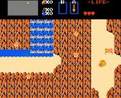

Ganon's Revenge

Ganon's Revenge
|
|
The Story So Far... For a wizard of Ganon's power, death is but a temporary setback. His defeat at the hands of the legendary hero Link only redoubled his rage. Ganon has returned to life more powerful than ever, and has recaptured Princess Zelda and the Triforce of Power. Using the Triforce's energy he has twisted the land of Hyrule into a treacherous maze. He holds Zelda captive in his lair, knowing Link will surely try to rescue her. If Hyrule is to be restored, the Triforce of Power and the Triforce of Wisdom must be reclaimed. Link must face this strange new world to save the Princess and return peace to the land. | ||
|
 Download the patch... |
Praise for Ganon's Revenge
| |
| Copyright © 1997-1999 Jay McGavren. All Rights Reserved. |